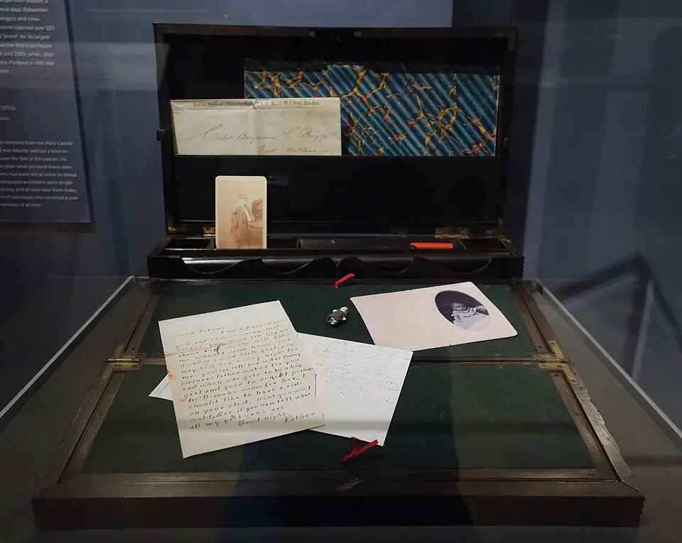
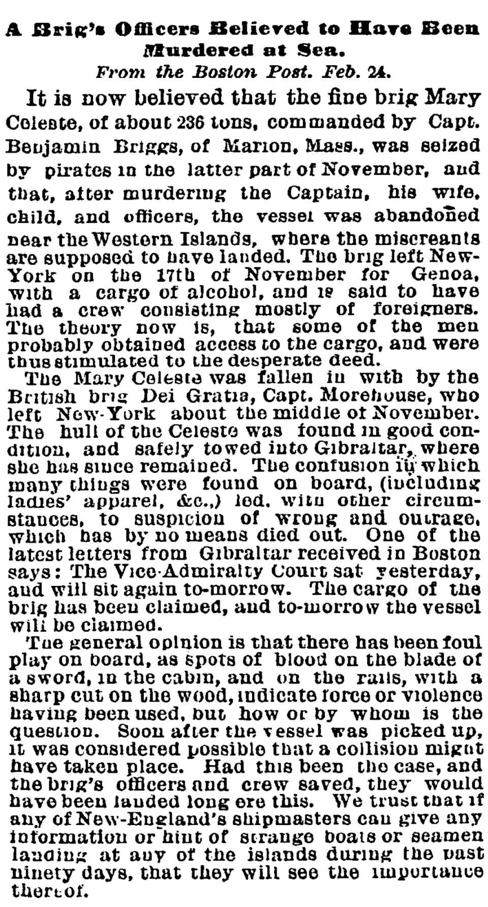
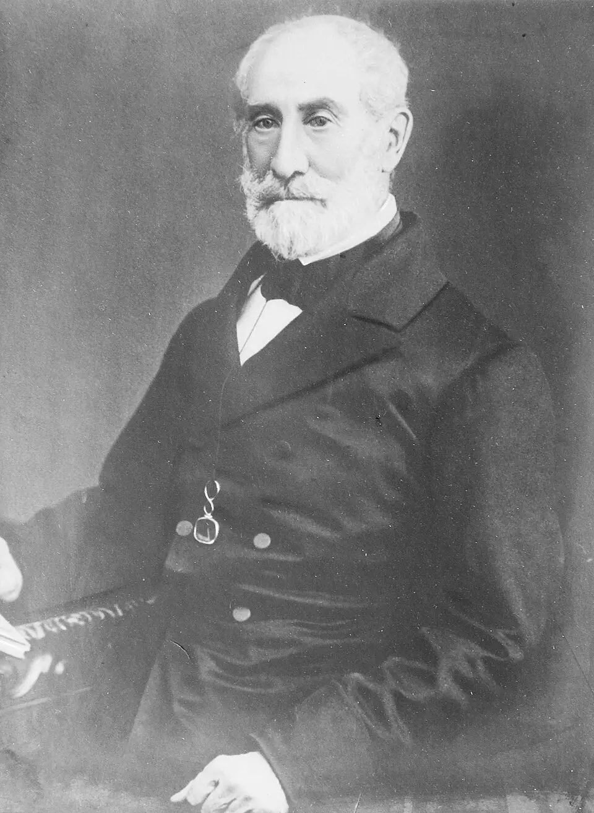
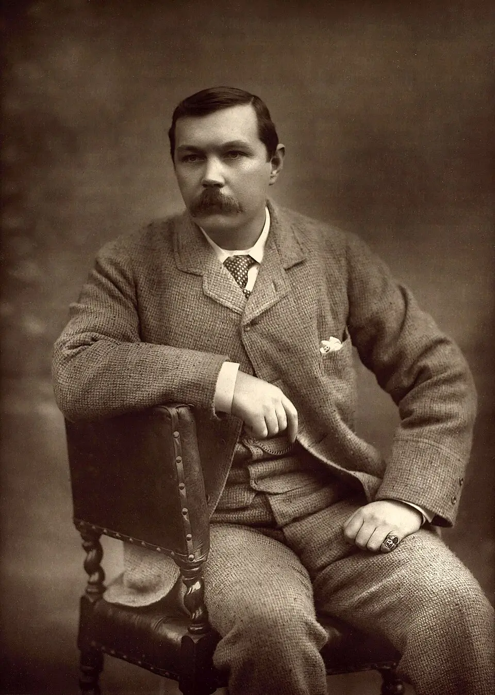

Mary Celeste: con tàu ma không một bóng người
Ngày 4/12/1872, một con tàu buôn trôi giữa Đại Tây Dương, hàng hóa còn nguyên, xuồng cứu sinh biến mất. Mười người trên tàu không bao giờ được tìm thấy.

Khoảng 1 giờ chiều ngày 4 tháng 12 năm 1872, giữa quần đảo Azores và bờ biển Bồ Đào Nha, người cầm lái tàu Dei Gratia báo có một con tàu đang lảo đảo tiến lại gần. Thuyền trưởng David Morehouse thấy cánh buồm căng lạ và không ai trên boong. Tín hiệu gửi đi không được trả lời. Phó thuyền trưởng Oliver Deveau chèo xuồng sang, đọc tên ở đuôi tàu: Mary Celeste. Trên tàu không có ai.
Ngày 3 tháng 11, Briggs viết thư cho mẹ: "tàu chúng con đang rất gọn gàng, con hy vọng sẽ có một chuyến đi tốt".
Ai đã ở trên tàu?
Mary Celeste được đóng ở Spencers Island, Nova Scotia, hạ thủy năm 1861 với tên Amazon. Năm 1868, tàu được bán cho chủ Mỹ và đổi tên. Đầu năm 1872, tàu được sửa lớn ở New York với chi phí 10.000 đô la.
Thuyền trưởng Benjamin Briggs, 37 tuổi, là người sùng đạo, đọc Kinh Thánh đều đặn. Ông mang theo vợ là Sarah và con gái Sophia hai tuổi. Con trai Arthur bảy tuổi ở lại quê. Thủy thủ đoàn có bảy người, trong đó bốn người Đức từ quần đảo Frisia. Tàu chở 1.701 thùng cồn sang Genoa, Ý. Ngày 3 tháng 11, Briggs viết thư cho mẹ: "tàu chúng con đang rất gọn gàng, con hy vọng sẽ có một chuyến đi tốt". Tàu rời New York ngày 7 tháng 11.
Những gì Deveau thấy


Tàu còn đi biển được, nhưng buồm rách, có cánh mất hẳn, dây chằng thõng xuống mạn. Có khoảng 1,1 m nước trong khoang, nhiều nhưng không đáng lo với một con tàu cỡ đó. Hai cửa hầm hàng bị mở, nắp đặt bên cạnh. Chiếc xuồng duy nhất, vốn đặt ngang trên cửa hầm chính, đã biến mất. Một que đo nước tạm bợ bị bỏ lại trên boong.
Đồ đạc cá nhân còn nguyên, kể cả một thanh kiếm trong bao dưới giường thuyền trưởng. Lương thực dồi dào. Nhưng phần lớn giấy tờ tàu và dụng cụ hàng hải của thuyền trưởng đã mất. Không có dấu vết cháy hay bạo lực. Mọi thứ cho thấy người trên tàu đã rời đi có trật tự, bằng xuồng.
Dòng cuối trong nhật ký ghi lúc 8 giờ sáng ngày 25 tháng 11, chín ngày trước đó, ở gần đảo Santa Maria thuộc Azores. Con tàu đã tự trôi gần 400 hải lý.
Tòa án ở Gibraltar


Morehouse đưa con tàu về Gibraltar, cách đó 600 hải lý, để đòi tiền cứu hộ. Phiên tòa bắt đầu ngày 17 tháng 12. Tổng chưởng lý Frederick Solly-Flood tin rằng có tội ác. Ông chỉ ra những vết cắt ở mũi tàu và vệt có thể là máu trên thanh kiếm. Ông nghi thủy thủ say rượu giết gia đình thuyền trưởng, rồi nghi cả chủ tàu lẫn thủy thủ Dei Gratia. Không có bằng chứng nào đứng vững. Ngày 8 tháng 4 năm 1873, tòa trao tiền cứu hộ 1.700 bảng, khoảng một phần năm giá trị tàu và hàng, thấp hơn nhiều so với kỳ vọng.
Hư cấu lấn át sự thật


Tháng 6 năm 1883, tờ Los Angeles Times kể lại câu chuyện với những chi tiết bịa: buồm căng đủ, lửa còn cháy trong bếp, bữa tối còn chưa nguội. Tháng 1 năm 1884, tạp chí Cornhill đăng truyện ngắn không ký tên "J. Habakuk Jephson's Statement". Tác giả là Arthur Conan Doyle, khi đó 25 tuổi, đang làm bác sĩ trên tàu. Ông đổi tên tàu thành Marie Celeste, đổi tên thuyền trưởng, và để xuồng cứu sinh còn nguyên. Truyện đến với nhiều độc giả hơn hẳn sự việc thật. Đến nay nhiều người vẫn gọi con tàu là Marie Celeste.
Các giả thuyết
Hải tặc bị loại vì đồ quý không bị lấy. Năm 1925, nhà sử học J. G. Lockhart cho rằng Briggs lên cơn cuồng tín và giết mọi người. Sau khi nói chuyện với con cháu nhà Briggs, ông xin lỗi và rút lại giả thuyết.
Các giả thuyết được coi trọng hơn đều có chung một ý: Briggs tin tàu sắp gặp nguy và ra lệnh xuống xuồng. Deveau nghĩ que đo nước hỏng khiến thuyền trưởng tưởng tàu đang chìm. Nhà nghiên cứu Paul Begg xem xét khả năng hơi cồn rò rỉ làm Briggs sợ cháy nổ. Khi dỡ hàng ở Genoa, 9 trong số 1.701 thùng được phát hiện đã cạn. Anh họ của Briggs là Oliver Cobb cho rằng xuồng có thể được buộc vào tàu bằng dây, rồi dây đứt. Không ai biết chắc.
Dư âm
Mary Celeste tiếp tục chạy thêm 12 năm. Tháng 1 năm 1885, thuyền trưởng Parker cố ý cho tàu mắc cạn trên rạn Rochelois ở Haiti để lừa tiền bảo hiểm. Năm 2001, đoàn của nhà văn Clive Cussler tuyên bố tìm thấy xác tàu. Nhưng phân tích vòng gỗ cho thấy cây làm ra tấm gỗ đó vẫn còn sống vào năm 1894, gần 10 năm sau vụ đắm. Con tàu bị bỏ lại là chuyện có thật, còn điều gì khiến mười con người rời khỏi nó thì đến nay vẫn chỉ là phỏng đoán.